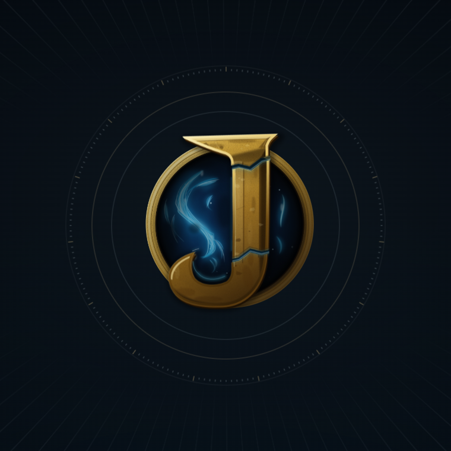
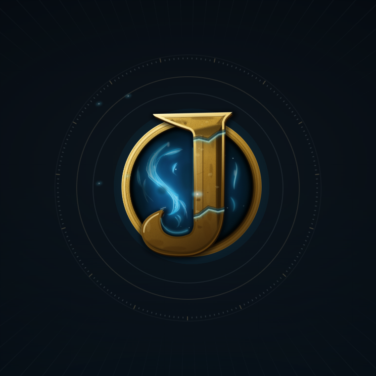

These are paused Chrome renders of the live CSS tick animation at its start, quarter turns, and completion. The uninterrupted opening recording shows the same field rotating naturally while the scene remains visible.

Full 1920×1080 frame
